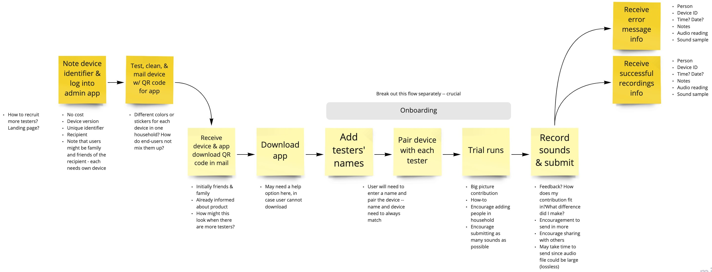
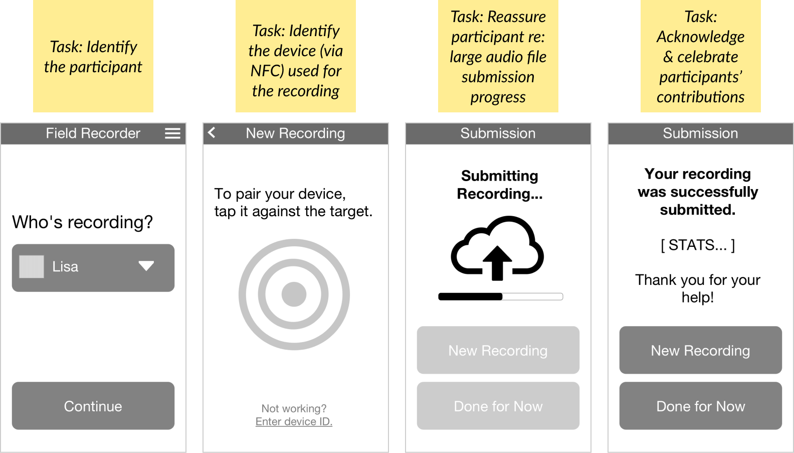

Machine learning has great potential to improve outcomes in respiratory health, but large, high-quality data sets are required to train AI models. For companies entering this space, the collection of sufficient data sets can be cost-prohibitive, time-consuming, and error-prone.
Vox Pulmini is an early-stage startup on a shoestring budget, that needs to collect audio samples for a respiratory health management app. I worked side-by-side with the engineer/founder to strategize on how to automate collection and labeling of samples from volunteer participants.
Our main goals were to:
We first sketched out high-level user flows; this helped identify pain-points in a potentially complex, unusual user interaction (a mobile phone communicating with a respiratory device). These diagrams served to clarify the data and metadata to be collected.
From high-level flow diagrams, we next focused on the screens of the app itself, for collection and submission of audio samples. We began by defining a few key wireframes.
After iterating and converging upon these key wireframes, I translated them into low-fidelity mockups, and an interactive, clickable prototype. The simple prototype made rapid testing possible before committing the UI design to code.
Collecting large quanities of high-quality data from volunteer participants requires careful attention to user experience. In our particular effort, the following UX principles / approaches proved useful:
Vox Pulmini
Krispin Leydon, Founder
User Experience
Nilpa Jhaveri